Experience New York City Art
Discover museums, galleries, street art and subway mosaic art across the city.
By: Chloe Dahan
↓Places I've Been
All images in this section have been taken by me. Click on thumbnails to see different views of each location.
MoMA
Midtown, Manhattan
11 W 53rd St, New
York, NY 10019
The Museum of Modern Art is one of the world's leading museums for modern and
contemporary art, featuring works including paintings, sculpture, photography, film, and
design. Highlights include pieces by Van Gogh, Picasso, Warhol, and contemporary
innovators.
My Review: This was my first time visiting the main MoMA. It was such a
beautiful space and easy to navigate through. The vibes were so amazing and we were able
to go for free through UNIQLO Friday Nights (free admission for NY residents). My
favorite exhibition was Pirouette: Turning Points in Design. It really emphasized how
design is incorporated into everything we do and is a "fundamental element of life." It
was so cool to see the original sketch for the "I ❤️ NY" logo in real life after
learning of its significance through podcasts a while back. I also really into how they
showcased things/objects we see every day like the monobloc chair and head phones;
showing how even the most ordinary things are designed with intention. My favorite
painting I saw there was The Red Studio by Matisse. Overall it was a lovely evening and
I'm excited to return with more time so I can see everything.
Whitney Museum of American Art
Meatpacking District, Manhattan
99 Gansevoort
St,
New York, NY 10014
The Whitney is the only museum dedicated to American art and artists. It has an
incredible rooftop overlooking the Hudson River. The views are as impressive as the art.
My Review: I love the location of this museum and there is so much to
do nearby. The views from the balconies on each floor are just as cool as the art. My
favorite floor was the 7th, which had the Whitney's Collection: Selections from 1900 to
1965. The collection had pieces from Georgia O'Keeffe, Edward Hopper and Rockwell Kent -
which were some of my favorites. Definitely want to go back again when they have new
exhibits. Entry is free for people 25 and under everyday and free the second Sundays of
every month for all.
Noguchi Museum
Long Island City, Queens
9-01 33rd Rd,
Astoria, NY 11106
A hidden gem dedicated to the life and work of sculptor and designer Isamu Noguchi. The
space includes galleries, archival materials, and a celebrated outdoor sculpture garden.
It emphasizes Noguchi's blending of art, design, craft, and landscape.
My Review: I've always wanted to go and I finally made it! Super cool
fact - it's the first in the U.S. designed and installed by a living artist to showcase
their own work. The museum had a very serene atmosphere, especially the sculpture the
sculpture garden - which was my favorite part. Also, it's free on the first Friday of
every month if you reserve a ticket!
The MET
Upper East Side, Manhattan
1000 5th Ave, New
York, NY 10028
The Metropolitan Museum of Art is one of the landmark art museum's in NYC, showcasing
thousands of years of global art, from ancient artifacts to modern works. It's a
massive, inspiring place to explore and one of the city's must-see cultural stops.
My Review: The Chinese Garden Court was my favorite part. It's so
beautiful and cool. It was so busy though which was overstimulating but still so fun. We
also were able to do pay what you wish as residents which was awesome. Seeing all the
folliage in central park through the windows was so so beautiful too.
MoMA PS1
Long Island City, Queens
22-25 Jackson
Ave,
Queens, NY 11101
A contemporary art center in Long Island City dedicated to experimental and emerging art.
Housed in a historic school building, PS1 features large-scale installations,
performances, and avant-garde programming. It operates in partnership with MoMA but has
its own identity and curatorial focus.
My Review: Visited MoMA PS1 in Queens, which is separate from the MoMA
in Manhattan. It isn't about showing the big-name pieces like the main MoMA. This place
is all about giving room for new, experimental art/artists.The space is super cool, but
also kind of eerie, which just adds to the experience. It's in an old public school
building from 1892, so the architecture has this really unique, almost haunting feel (I
lowkey got scared when there was no one else in the hallways).I visited mainly for the
James Turrell site specific installation, Meeting, which was the second Skyspace that he
constructed in the US. I went when they first opened during the day time, so none of the
ambient colorful lights were turned on in the space. Wish I had gone closer to sunset to
get the full experience. There is an uncovered opening in the ceiling so it is only open
if weather permits.Not art related, but the cafe there was awesome. I grabbed a latte on
the way out after checking out the museum store, and it was a nice chill moment.If
you're a New York resident, it's free too, so there's no excuse not to check it out!
Lévy Gorvy Dayan
Chelsea, Manhattan
19 E 64th St, New
York, NY 10065
Lévy Gorvy Dayan is a New York–based modern and contemporary art gallery known for its
blue-chip exhibitions, curated programs, and work with major artist estates. The gallery
also offers art advisory and appraisal services, supporting collectors through
acquisition, estate planning, and collection care.
My Review: I've been wanting to visit this gallery for so long and I
finally got the chance to! It felt like the perfect time to do so with the fall city
feeling and halloween decorated upper east side townhomes, which the gallery is situated
amongst. The space itself is so beautiful with the brightness from the skylight on the
second floor, grand staircase and checkered granite floors on the first floor. One of
the current exhibitions, Downtown/Uptown: New York in the Eighties, brought life into
the gallery with vibrant colors and the recognizable works of artists like Jean-Michel
Basquiat, Guerrilla Girls, Keith Haring and Andy Warhol. I loved the variety of mediums
on display, showcasing the breadth of artistic exploration during that time. The gallery
was free to enter - I was able to walk right in and explore. Definitely want to visit
again for another exhibition.
 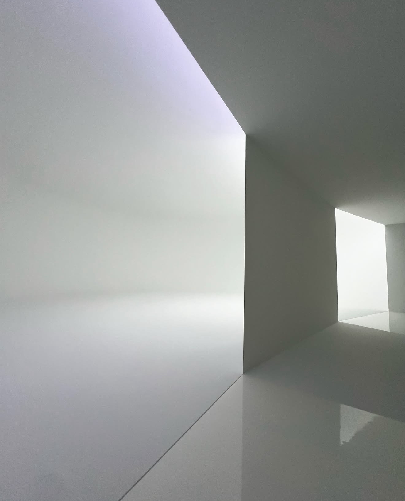
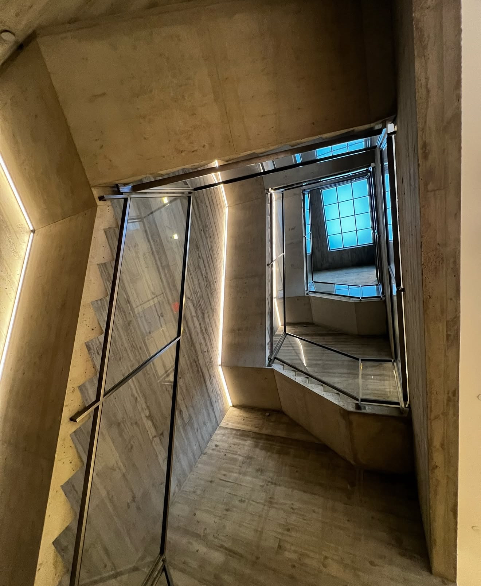
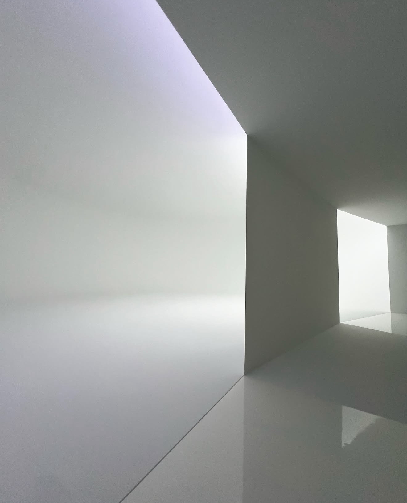
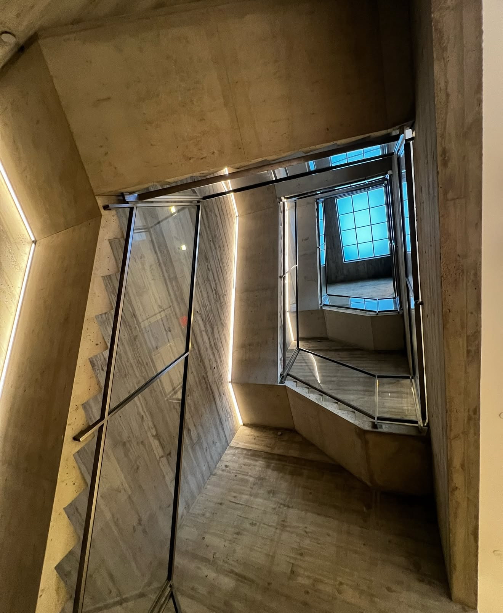
 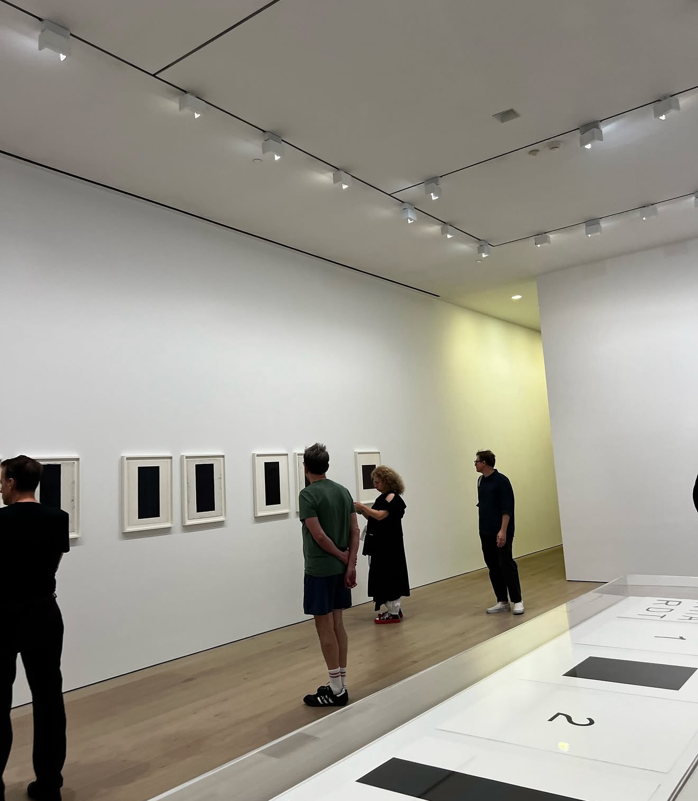
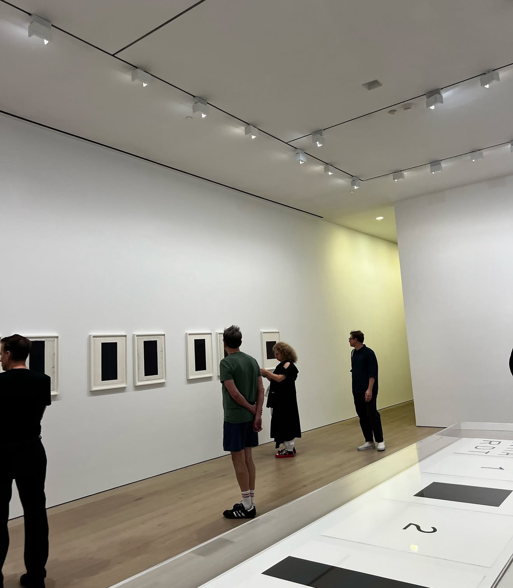
David Zwirner | 20th Street
Chelsea, Manhattan
537 W 20th St,
New
York, NY 10011
One of New York's most prominent commercial galleries, with several locations in Chelsea.
Zwirner represents major contemporary artists and frequently mounts ambitious
exhibitions. Galleries are free to visit and often include museum-quality installations.
My Review: Out of all the art movements ever, the light and space
movement is my favorite. Seeing Doug Wheeler's work was so insanely amazing (Doug
Wheeler | Day Night Day). I got lucky and was able to enter the exhibit alone, which
made my experience exponentially better. The illusion of scale was so mind boggling it
was crazy. The room was so intensely white that it felt almost blinding; the light
seemed to envelop everything. I had to walk with my hand in front of me because I
couldn't identify where the walls ended or how far the space extended. It really felt
out of body. In the photos I took, shadows were captured, which made the space appear
less purely bright, but in person, it truly was a luminous void. It was also super cool
seeing some of Ad Reinhardt's work in real life (Ad Reinhardt |
Print-Painting-Maquette). The exhibit included screen printing which he took up later in
his career. The 20th street gallery itself is a beautiful building and space, plus it is
free which is awesome.
 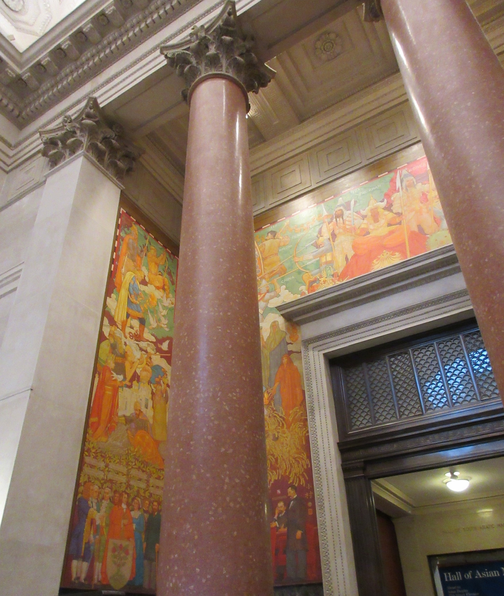
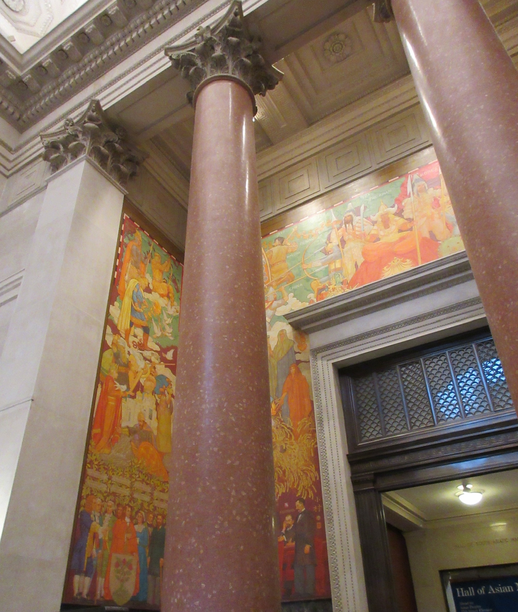
 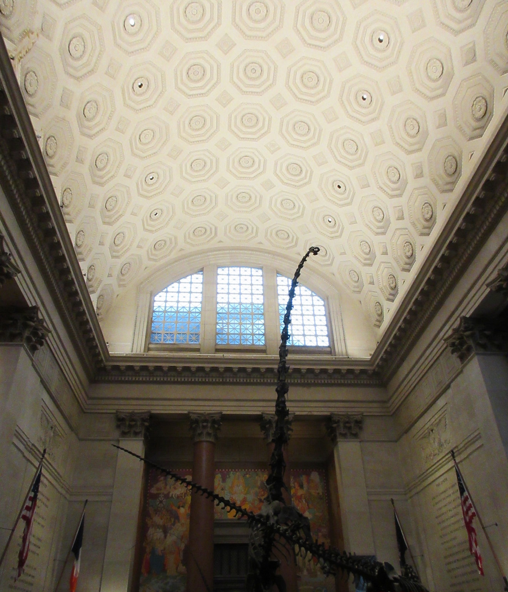
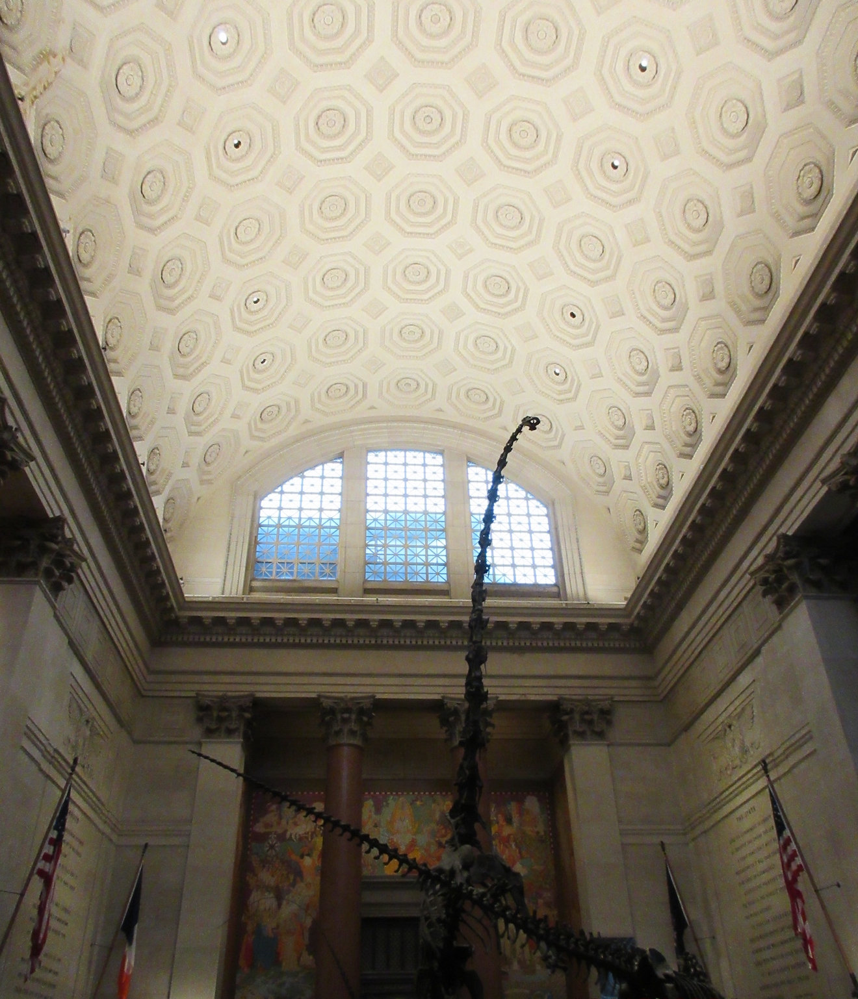

American Museum of Natural History
Upper West Side, Manhattan
200
Central Park West,
New York, NY 10024
One of the largest natural history museums in the world, featuring extensive collections
on biodiversity, Earth science, human cultures, and paleontology. Popular exhibits
include the dinosaur halls, the giant blue whale model, and the Hayden Planetarium.
My Review: The American Museum of Natural History is a classic NYC
experience that never disappoints. The dinosaur halls, planetarium shows, and vast
cultural exhibits make it easy to spend hours wandering and still feel like you've only
scratched the surface. It's educational without being stuffy, visually stunning, and
perfect for all ages. Whether you're into science, nature, or just want to feel a sense
of wonder, this museum delivers every time.

 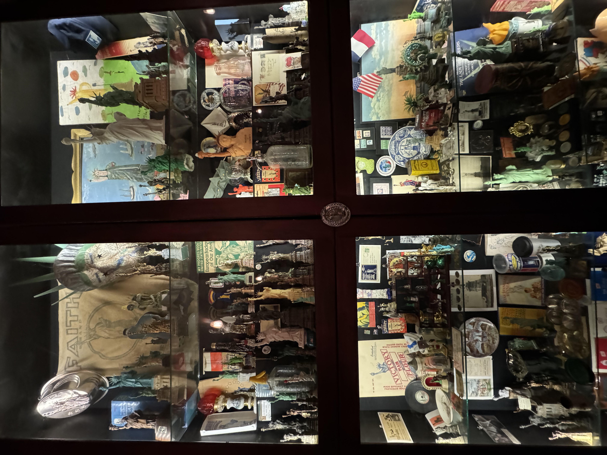
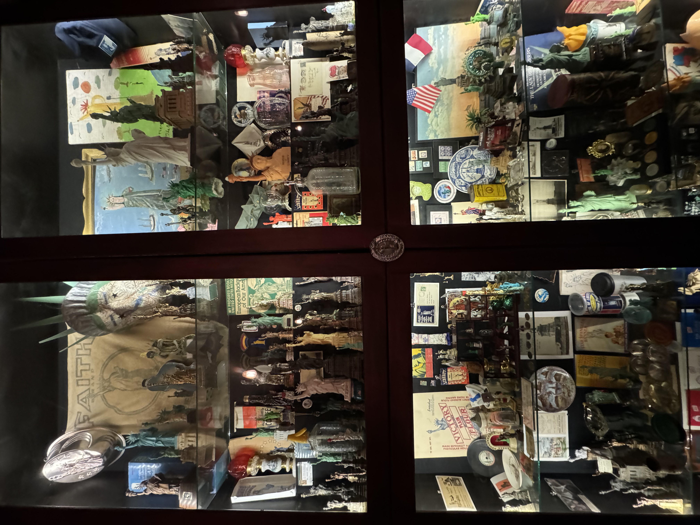
The City Reliquary Museum
Williamsburg, Brooklyn
370
Metropolitan
Ave, Brooklyn, NY 11211
A small, community-run museum in Williamsburg showcasing NYC's local history through
everyday artifacts, vintage ephemera, and neighborhood-sourced collections. Exhibits
highlight the city's cultural quirks, civic pride, and grassroots storytelling.
My Review: The City Reliquary is one of Brooklyn's most charming hidden
gems. It feels like stepping into a living scrapbook of New York, full of quirky
artifacts, neighborhood history, and community, made exhibits. It's small, a little
eccentric, and completely heartfelt. If you love local history, odd treasures, or
anything that captures the spirit of everyday NYC life, this tiny museum is absolutely
worth the visit.
On My List
These are museums and galleries I haven't visited yet, but they're at the top of my list. Each one offers something unique to NYC's art scene.

Solomon R. Guggenheim Museum
Midtown, Manhattan
1071 5th Ave,
New York, NY 10128
The Guggenheim is an iconic Frank Lloyd Wright-designed museum known for its spiraling ramp galleries and world-class modern and contemporary art exhibitions.

The Frick Collection
Upper East Side, Manhattan
1 E 70th St, New
York, NY 10021
The Frick Collection offers an intimate look at European masterpieces, decorative arts, and sculpture, all displayed in the elegant former mansion of industrialist Henry Clay Frick.

Hauser & Wirth | 22nd Street
Chelsea, Manhattan
542 W 22nd St,
New York, NY 10011
Hauser & Wirth's 22nd Street location in Chelsea features large, museum-style galleries that host ambitious contemporary art exhibitions. It's a spacious, beautifully designed spot to see major works by internationally recognized artists in the heart of NYC's gallery district.
My Favorite NY Art Experience
Dia Beacon
Beacon, NY
3 Beekman St, Beacon,
NY 12508
Even though this isn't in New York City, this museum is a wonderful day trip. It's located
along the Hudson River, about 90 minutes from NYC. The train ride there is scenic and Beacon
is a fun town to explore. Known for its vast galleries and natural light, Dia Beacon
specializes in minimalist, conceptual, and land-art works from the 1960s onward. Many
installations are site-specific and monumental in scale.
My Review: This was one of the most beautiful spaces I've ever been in.
Housed in a former Nabisco box-printing facility, the museum was renovated by Dia with
artist Robert Irwin (a long-time San Diego resident known for his Light and Space work) and
other architects. We learned that the museum is naturally lit, with skylights as the primary
light source—originally crucial for factory workers to monitor print quality. Now, it's
considered a "daylight museum," with hours adjusted to the changing seasons and sunsets. My
favorite installation was Larry Bell's Duo Nesting Boxes (2021), pictured in the first
slide. The natural light brought out the vibrant colors, making it feel like the piece was
constantly shifting with the environment. The scale of the space and installations was truly
incredible. We took the train up to Beacon, NY, which runs along the water (sit on the left
side going to the museum from NYC to be on the Hudson side), and there's a free shuttle from
the station into town. The visit was so amazing and restorative!
NYC Subway Mosaic & Street Art
A collection of some unique street art and subway mosaics found throughout the city.


Pro Tips for Experiencing NYC Art Like a Local
Free Hours
Many museums offer pay-what-you-wish hours. Check their websites for specific times and don't miss these opportunities to explore.
Off-Peak Visits
Visit weekday mornings or late afternoons to avoid crowds. You'll have a much more intimate experience with the art.
Gallery Walks
Explore Chelsea or the Lower East Side on a Saturday afternoon. Many galleries have opening receptions with free wine and good company.
Street Art Tours
Join a guided street art tour in Williamsburg or Astoria to discover incredible murals and meet local artists.
Public Spaces
Don't overlook free public art. The High Line, NYCBA sculptures, and street installations are awesome and available to all.
Follow the Locals
Check local art Instagram accounts and blogs for hidden gems. New York's best art experiences are often found through community recommendations.